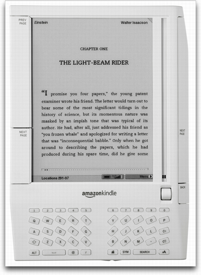
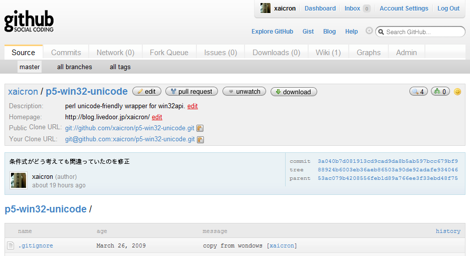

xaicron (id:xaicron)
2009 11/20 Casual Perl Talks#1
10分のつもりで120枚ぐらいありますが
TAKESAKOメソッド(高橋メソッド？)では5分で100枚って書いてあったから大丈夫
my $profile = {
name => '嶋田 裕二',
id => 'xaicron',
age => 23,
}
すぎゃーんさんをパクり参考にしました
Blog: にひりずむ::しんぷる
(http://blog.livedoor.jp/xaicron/)
※id:xaicronの方はなんだかエロいことが書いてあるので大人になってから見ましょう（今は完全に放置ですが）
ちなみに
PHPは難しかったので挫折しました
当時はサーバー構築とかDB構築とかしないと動かないと思ってた
好きな言語は もちろんPerl
"I ♥ Perl"
さて
今日は、WindowsでPerlを今より少しだけ便利につかえるかもしれないモジュールを書いたのでご紹介します。
その名も
Windowsのファイルシステムの文字コードについて
Windowsでは1つのファイルに対して上記3種類のものが扱える
Perlで通常扱えるのはcp932のみ
> ファイル名にUnicodeが含まれている場合は「?」になってしまう。
こっちが「?」だよ！！！
OSのバージョンによっては、8.3形式で帰ってくることも。
> 単純な読み書きは出来るが、Unicodeな名前にrenameとかは出来ない
デモ1
宮川さんのこの辺の記事もPerlとUnicode問題について詳しいです。
どうすればいいの・・・？
> Windows捨ててLinuxとかMac使おうぜ！！
最近だとKindle

でもWindowsじゃないとエロゲーが出来ないよ！！
> エロゲーもPerlもしたいよ！！
なんとか扱えるように出来ないか？
> Win32::APIを使うといいっぽい！
use Win32::API; my $MessageBox = Win32::API->new( "user32", # 呼び出し元DLL名 "MessageBoxA", # 呼び出す関数 "NPPN", # 関数の引数 "N" # 戻り値 ); $MessageBox->Call(0, "Hello, Casual!\n", "Message", 4096);
こんな感じで関数を呼び出してつかう
使わない場合
use DynaLoader; sub GetProcAddress { my ($DLL, $API) = @_; my $path = "$ENV{SystemRoot}\\system32\\$DLL"; my $libref = DynaLoader::dl_load_file($path); pack "L", DynaLoader::dl_find_symbol($libref, $API); } my $x86 = "" . "h\0\0\0\0" . "h" . pack("P", "Message") . "h" . pack("P", "Hello, World!\n") . "h" . pack("L", 1024) . "\xb8" . GetProcAddress("user32.dll", "MessageBoxA") . "\xff\xd0" # call eax . "\xc3" # ret ; DynaLoader::dl_install_xsub("X",unpack"L",pack"P",$x86);&X;
ちょっと難しい
これを使えばUnicode文字が含まれてるファイルを扱える。
詳しくはhttp://subtech.g.hatena.ne.jp/miyagawa/20070815/1187134943が、しかし。
というわけで
いろいろありましたが、
やっと本題
WindowsのUnicode関連のあれこれをすっきり解消したい！!
そんなあなたに
Win32::Unicodeを使ったら
といったことはありませんが、便利です。
単体で使う可能性があるものは以下の6つ
エクスポートされる関数
全部「W」がつく
use strict; use warnings; use utf8; use Win32::Unicode::Console; printW 'I ♥ Perl';
flagged utf8をそのままコマンドプロンプトに出力できる
デモ2
便利！！
エクスポートされる関数
|
|
IO::Fileっぽく
use strict; use warnings; use utf8; use Win32::Unicode::File; my $wfile = Win32::Unicode::File->new; $wfile->open('>', '森鷗外.txt'); # Unicodeファイル $wfile->binmode(':encoding(cp932)'); $wfile->write("こんにちわ Unicode\n"); $wfile->close;
素のPerlっぽく
use strict; use warnings; use utf8; use Win32::Unicode::File; my $fh = Win32::Unicode::File->new; open $fh, '>', "I \x{2665} Perl.txt"; # Unicodeファイル binmode $fh, ':encoding(cp932)'; print {$fh} "こんにちわ Unicode\n"; close $fh;
デモ3
use utf8; use Win32::Unicode::File; my $file = "I \x{2665} Perl.txt"; if (file_type f => $file) { print file_size $file; }
TODO
エクスポートされる関数
|
|
use utf8; use Win32::Unicode::Console; use Win32::Unicode::Dir; my $wdir = Win32::Unicode::Dir->new; $wdir->open('森鷗外'); for my $file ($wdir->fetch) { sayW $file; } $wdir->close;
デモ4
File::Find
use utf8; use File::Find; find sub { my $file = $_; my $full_path = $File::Find::name; my $cwd = $File::Find::cwd; printf "%s : %s : %s\n", $file, $full_path, $cwd; }, '.';
File::Find Win32::Unicode::Dir版
use utf8; use Win32::Unicode::Console; use Win32::Unicode::Dir; findW sub { my $file = $_; my $full_path = $Win32::Unicode::Dir::name; my $cwd = $Win32::Unicode::Dir::cwd; printfW "%s : %s : %s\n", $file, $full_path, $cwd; }, '.';
$Win32::Unicode::Dir::nameとか長すぎるので、第一引数で受け取れます。
File::Find 第一引数版
use utf8; use Win32::Unicode::Console; use Win32::Unicode::Dir; findW sub { my $perf = shift; printfW "%s : %s : %s\n", $perf->{file}, $perf->{path}, $perf->{cwd}; }, '.';
超すっきりしましたね！！
エクスポートされる関数
use utf8; use Win32::Unicode::Console; use Win32::Unicode::File; my $fh = Win32::Unicode::File->new; open $fh, '<', '存在しない.txt' or dieW errorW; print join "\n", <$fh>; close $fh;
さて
ここまで来て言うのもアレですが、
「W」はさすがに無くね？
ｗｗｗ
「もうWなんて飽き飽きなんだよ！」
「おれはもっと普通にやりたいんだよ！！」
Win32::Unicode::(File|Dir)->newとかやってられないよ！！
そんなあなたに
エクスポートされる関数
いままでのから「W」を抜いたやつ
use utf8; use Win32::Unicode::Native; print "flagged utf8な文字も普通にいける"; # Win32::Unicode::File->newとかしない open my $fh, '>', '森鷗外.txt' or die error; print $fh "ほげほげ"; close $fh; # Win32::Unicode::Dir->newとかしない opendir my $dh, "\x{2600}" or die error; say join "\n", readdir $dh; close $dh;
完全にそのまま！！
ちなみに
use Win32::Unicode '-native'
でもOK
デモ5
だけど便利！！
かもしれない
そんなわけで
Perl vs WindowsFS
↓
Perl ♥ WindowsFS
これからはもうUnicodeのファイルが来てもプッツンしない
健全な生活を歩むことができるようになりますね！！
Win32::Unicodeを使えば
WindowsでPerlを使うときはぜひ使って見てください！！
開発はgithubで行ってます (http://github.com/xaicron/p5-win32-unicode)

CPANにあげる予定
そんなわけで
初めて話をしたので至らない点も多かったと思いますが
最後まで聞いていただいてありがとうございました。
Casual Perlはゆる～いつながり
気軽に集まれるプログラマーの輪が広がっていくと、いろんなものがもっともっと生まれていくと思います。
これからもこういった集まりとかが出来るとすごくいいですね！！
今までトークしたことない自分も何か話せたし
普段は聴いているだけの人でも
ちょっとした勇気でスピーカーになれる！！
まぁ聴いているだけでもいいんですが。
結局何が言いたいかというと
Casual Perl++
開催してくださったyusukebeさん本当にありがとうございます！！
というわけで